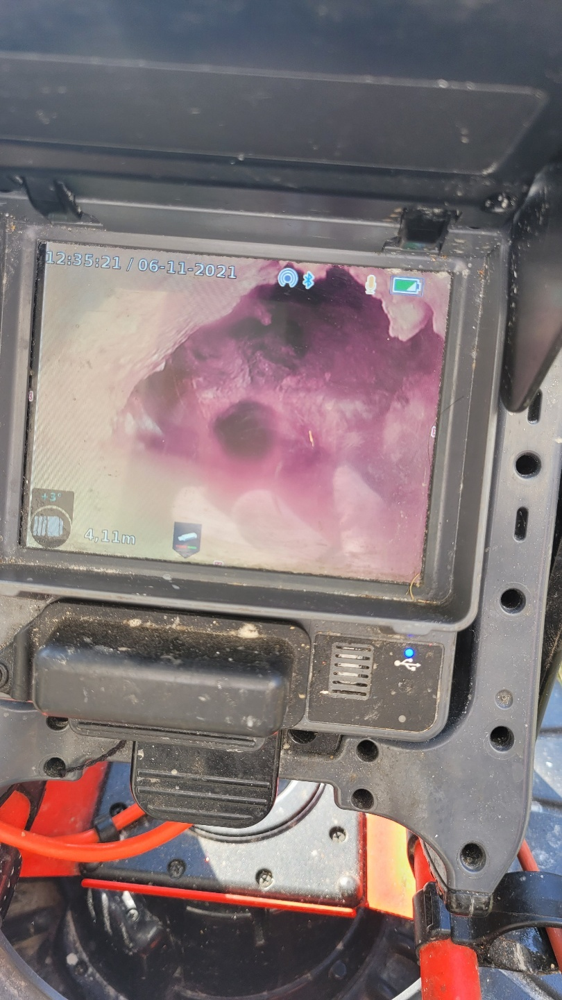
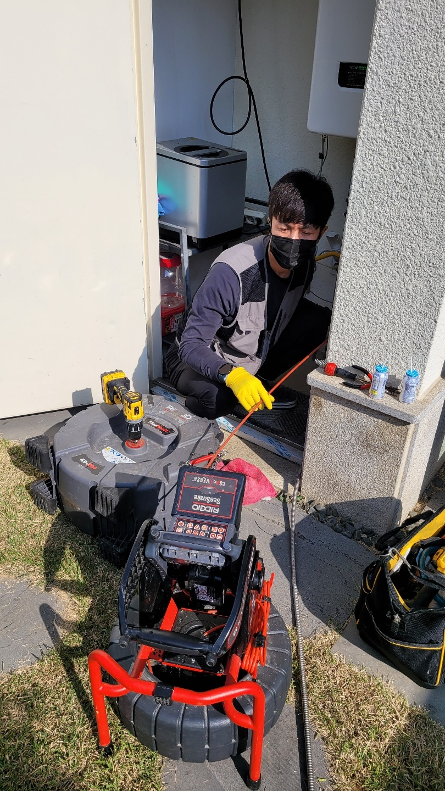
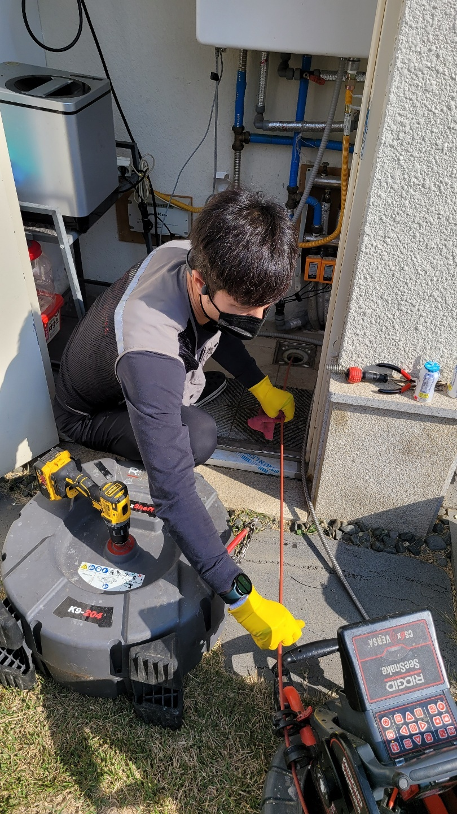
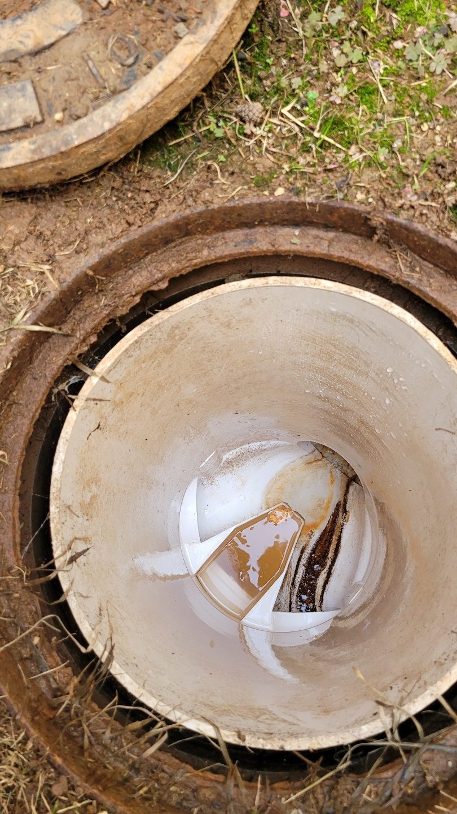
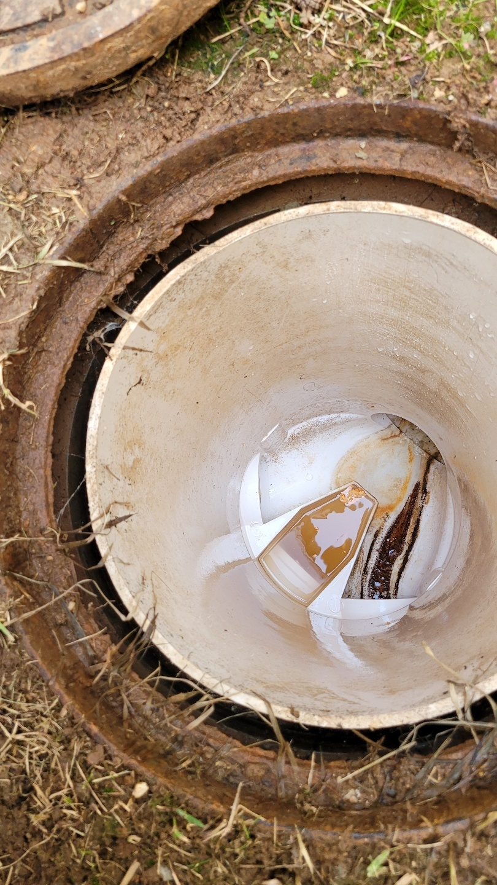
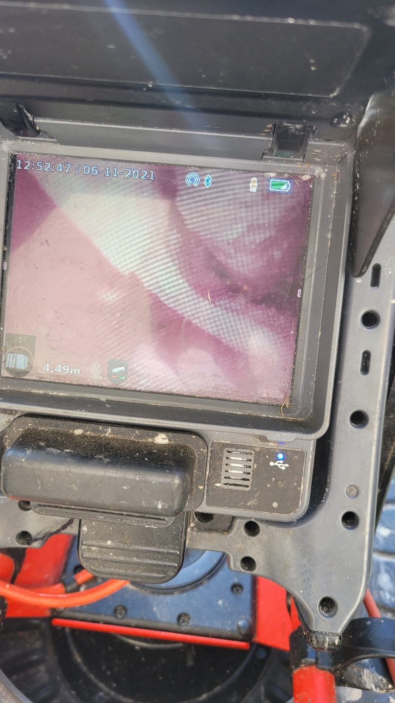

🏠 평택 공장하수구막힘 서탄면 정남면 하수구업체 잘 뚫는 곳은?
평택 정남면 싱크대막힘 전문 시공 후기

📋 작업 개요
- 위치: 평택 정남면, 정남면, 평택
- 서비스 유형: 싱크대막힘, 변기막힘, 하수구막힘, 배관막힘, 역류해결, 뚫는업체, 배관청소, 고압세척
- 작업 일시: 2022. 11. 3. 23:30
- 업체명: 하수구수사대 (010-5615-2118)
🔍 문제 상황
안녕하세요. 하수구수사대입니다.
오늘도 어김없이 하수구 막힘 현상으로 인해 고통을 호소하시는 분들의 해결을 위해 현장을 다녀왔는데요. 그 후기를 소개해드리고자 합니다. 함께 살펴보도록 하겠습니다.
이번 평택 공장하수구막힘 서탄면 정남면 하수구업체 하수구수사대를 찾아주신 분은
공장을 운영 중이신 사장님이셨습니다.

🔎 원인 분석
💡 전문가 진단: 이번 평택 공장하수구막힘 서탄면 정남면 하수구업체 하수구수사대를 찾아주신 분은 공장을 운영 중이신 사장님이셨습니다.
매일같이 많은 인부분들과 함께 열심히 일을 하던 중에 욕실 쪽에 위치하고 있는 하수구에서 계속해서 악취가 올라오고 물이 시원찮게 내려가는 것을 발견하셨다고 합니다.
몇 번 더 물을 사용해보니 역류가 시작될 조짐까지 보여 지인의 소개로 알게 된 저희 하수구수사대를 찾아주셨는데요. 유선상으로 연락을 주셔서 막힌 위치와 대략적인 현재 상태를 확인했고 빠른 해결을 위해 일정 조율 후 해당 장소로 찾아뵈었습니다.
모든 해결을 위해서는 원인을 신속하고 정확하게 파악해내는 것이 관건인데요.
저희 평택 공장하수구막힘 서탄면 정남면 하수구업체 하수구수사대는 악취와 막힘 현상이 진행되고 있는 욕실의 하수구 배관을 확인하기 위해 내시경 카메라를 챙겨 출동했는데요. 해당 장비를 하수구 배관 안쪽으로 깊숙이 집어넣어 카메라를 통해 무엇이 배관을 막고 있는지 파악하기에 돌입했습니다.
아무래도 많은 사람들이 함께 이용을 하다보니 머리카락과 작은 이물질들이 배관 안에 가득 쌓여 배관을 꽉 막고 있는 것을 확인했죠. 이제 원인 파악이 끝났으니 빠른 해결 작업을 시작하는데요. 크고 단단한 이물질이 빠져 배관을 막고 있는 상태는 아니었습니다.

🔧 작업 과정
경기도 평택시 고덕중앙로 322 4층 129호
고압세척만으로도 하수구 막힘 현상을 해결할 수 있는 상황이었습니다.
고압 세척을 진행하기 전 물과 이물질이 배수구 입구에도 조금씩 고여있는 상황이기에 석션기를 이용해 해당 물질들을 모두 빨아들이는 작업을 진행했습니다.
주변 정비가 끝나면 바로 고압 세척기를 통해 막힌 배관 뚫기 작업을 시작했는데요. 고압 세척기는 최신식이면서도 가장 강력하여 하수구 막힘 해결에 가장 흔히 쓰이고 있는 기계로 해결뿐만이 아니라 배관 세척도 동시에 가능한 기계입니다.
얇고 긴 호스를 배관 안에 서서히 집어넣으면서 배관 세척을 시작했는데요.
내시경 카메라를 통해 안에 이물질들과 위치를 모두 파악했지만 깔끔하게 제거가 되지 않았을 불상사를 대비하기 위해 작업 중간중간 다시 내시경을 배관 안에 삽입해 확인 또 확인을 하며 세척을 진행하고 있는 평택 공장하수구막힘 서탄면 정남면 하수구업체 하수구수사대입니다.
이리저리 배관 안을 모두 꼼꼼하게 살펴보며 세척을 하고 해당 작업이 마무리된 후에는 다시 내시경을 통해 마지막 확인을 하고 있습니다. 배관 안이 깨끗해진 것이 확인되면 몇 번이고 물을 틀어본 후 막힘없이 내려가는지 또다시 확인의 절차를 거칩니다. 저희업체는 작업 도중 발생한 먼지나 이물질, 등을 모두 깨끗하게 정리 및 청소를 해드리고 마무리를 짓고 있습니다.
저희가 다녀간 후 고객님들께서 청소를 다시 하지 않아도 될 정도로 깔끔한 뒷정리를 해드리고 있습니다.


✅ 작업 완료
또한 10년 이상 된 경험과 노하우를 지닌 전문 작업자분들께서 직접 상담 및 작업을 진행해 드리고 있어 매번 신속 정확한 원인 파악 및 해결 작업이 가능한데요. 공장이나 건물 상가와 같은 경우 해당 공간을 이용하는 사람의 수가 많기 때문에 하수구 막힘 현상이 빈번히 일어나고 있습니다.
역류와 악취, 벌레 발생 등의 현상을 막기 위해 꾸준히 배관 세척을 진행하는 곳도 많은데요. 저희 하수구수사대는 하수구 막힘 현상뿐만이 아니라 싱크대, 변기, 등의 막힘 해결과 배관 세척을 진행해 드리고 있으니 문의사항이 있으신 분들께서는 주저 말고 연락 주시기 바랍니다. 감사합니다.




⚠️ 주방 싱크대 배관 막힘 예방 수칙
- ✅ 기름기가 묻은 식기나 프라이팬은 설거지 전 키친타올로 반드시 기름때를 닦아내세요.
- ✅ 주기적으로 싱크대 개수대에 뜨거운 물을 가득 받아 한 번에 내려 배관 내부 기름을 씻어내세요.
- ✅ 배수구 거름망을 미세한 필터로 사용하시고 음식물 찌꺼기가 틈으로 새어 들지 않게 관리하세요.
- ✅ 베이킹소다와 식초를 뜨거운 물과 함께 일주일에 한 번씩 부어주면 배관 살균과 막힘 예방에 좋습니다.
💡 핵심 정리
- 확실한 장비 작업(내시경 점검 및 샤프트 스케일링)으로 원인을 뿌리 뽑습니다.
- 작업 후 1년 이내에 동일한 부위 재발 시 100% 무상 A/S 서비스를 보장합니다.
- 서울 · 경기 · 인천 전 지역에 24시간 언제든 긴급 출동할 수 있도록 항시 대기 중입니다.
❓ 자주 묻는 질문 (FAQ)
🚨 평택 정남면 싱크대막힘 문제로 고민이신가요?
정확한 원인 진단과 확실한 시공으로 재발 없는 해결을 약속드립니다.
24시간 긴급 출동 | 서울 · 경기 · 인천 전지역 | 1년 내 재발 시 무상 A/S